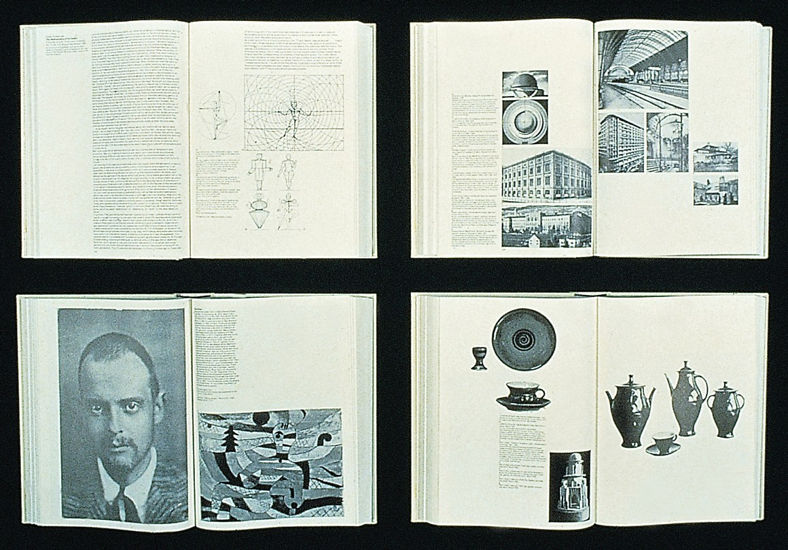

“Not a day goes by when I don’t think about somehow trying to live up to her example as a designer, as an artist, and as a mentor,” said Tod Machover, the Muriel R. Cooper Professor of Music and Media and head of the Media Lab’s Opera of the Future research group. Machover joined the Lab in 1985, its first year. “I was a musician and artist, and Muriel understood that it wasn’t so easy to be an artist in a culture like MIT. She never said too much about it, but she always found time to check in just to see how I was doing.”
For Jonathan Jackson, Cooper’s nephew, the caring was close to home. “She was my mentor, my idol, and my best friend. She was cool. She was loud. She could be brash, and she was a big part of why I became a designer.”
